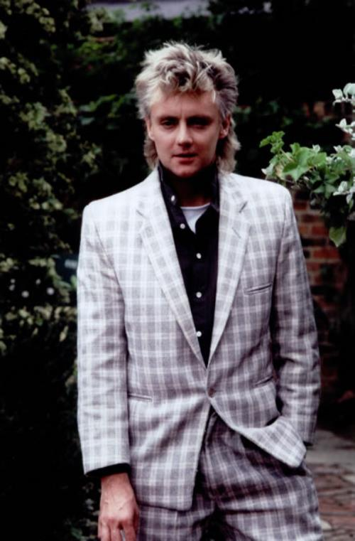
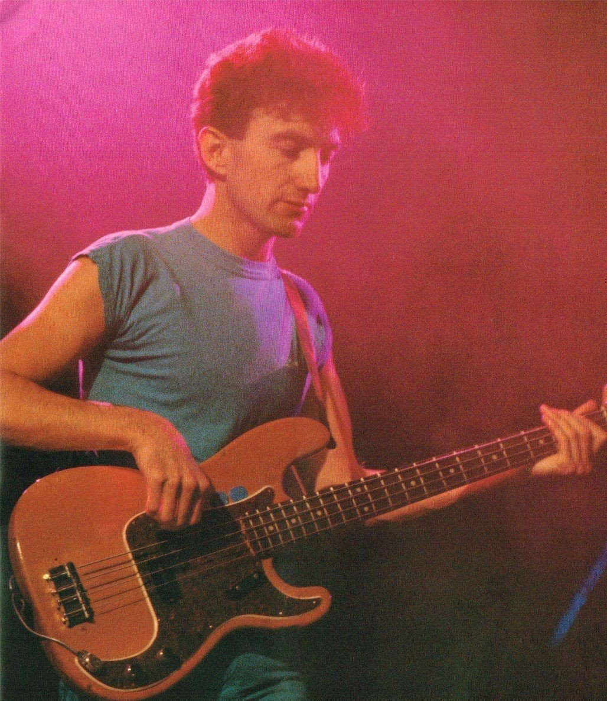

Roger Taylor
Roger Meddows Taylor OBE (born 26 July 1949) is an English musician, singer and
multi-instrumentalist, best known as the drummer for the rock band Queen. As a drummer, Taylor was
recognised early in his career for his unique sound. He was voted the eighth-greatest drummer in
classic rock music history in a listener poll conducted by Planet Rock in 2005.

John Deacon
John Richard Deacon (born 19 August 1951) is an English retired musician, best known for being the
bassist for the rock band Queen. He composed several songs for the group, including Top 10 hits
"You're My Best Friend", "Another One Bites the Dust", and "I Want to Break Free"; co-wrote "Under
Pressure", "Friends Will Be Friends" and "One Vision"; and he was involved in the band's financial
management.